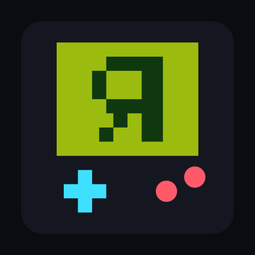

Svaga Studio — политика конфиденциальности
Svaga Games · действует с 1 декабря 2026 годаЧто хранится
Файлы игр, которые ты переводишь, проекты перевода, шрифты и готовые патчи хранятся только на твоём телефоне. Приложение не отправляет их на серверы Svaga Games или кому-либо ещё.
Что отправляется
Ничего. Поделиться готовым патчем можно только самому — через обычное меню «Поделиться» Android.
Чего нет
Рекламы, сторонних трекеров и аналитики, продажи данных.
Как удалить данные
Удали проект в приложении или удали само приложение — всё стирается с телефона.